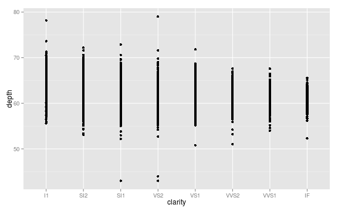
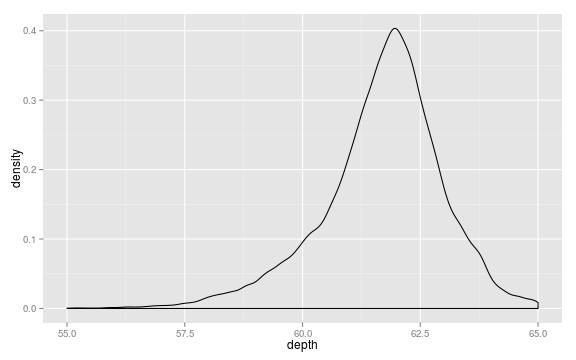
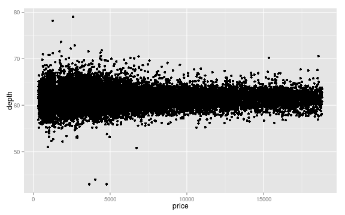
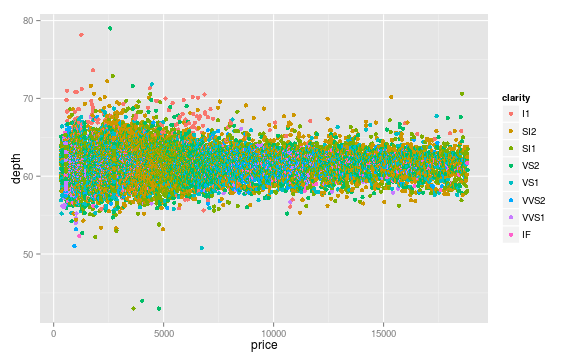

Grammar of Graphics in R (ggplot2)
Base R graphics are extremely rich, but the defaults and programming approach are pretty ugly and outdated. Hadley Wickham's ggplot2 package for R, inspired by Leland Wilkinson's call for a grammer of graphics in data visualization, is a far better platform for new commers to R.
In this tutorial, we'll explore the ggplot2 package, making some very pretty graphs!
Stock R graphics: versatile but ugly
Graphics and data visualization are built into the core of the R environment. The plot(...) function is highly context-aware and it is a great place to start whenever you are exploring new data structures or statistical functions.
For example, if you want to make a simple scatter plot, you can pass in two vectors of values:
plot( c(1, 2, 3, 4), c(10, 20, 30, 40) )
You can also pass functions to plot:
plot( function(x) { x^2 } )
Calling plot(...) on data.frame's, linear models, or regressions will produce sensible data visualizations. It is an incredibly versatile wrapper for producing visualizations of nearly any data structure produced or consumed by base R functions.
Unfortunately, none of these will be terribly attractive. Moreover, if you want to customize the graphics parameters used by plot(...) you'll find yourself opening a giant can of worms (see ?par).
Because plot(...) is so powerful, it is also very messy. In response to the messiness of plot(...) a few community efforts have arisen to try to simplify, and thereby contrain, data visualization in R. By far the most well-engineered and widely adopted of these community projects is the ggplot2 package from Hadley Wickham.
ggplot2
If it isn't already available, you can install the ggplot2 package by running install.packages("ggplot2"). Once the package is installed, loading ggplot2 for use in a script or at the console can be done by calling library(ggplot2).
In this tutorial, I'll demonstrate some example uses of ggplot2, but for many more ideas of what you can do with the library see the full documentation: docs.ggplot2.org.
For these examples we'll use the built in diamonds dataset. See ?diamonds for detailed information about this sample data.
Constructing a plot
The general workflow for constructing plots using ggplot2 will be to first describe the structure of the data that you want to visualize and then apply visualization functions to that structure. Although this coding idiom, and the syntax that has been designed to support it, might feel strange at first you will hopefully soon come to appreciate the elegance that comes from separating the description of what data you want to visualize from the particulars of how you want to project that visualization. Let's look at an example.
First, we'll initialize a ggplot2 object that describes both the source of the data we want to visualize and the relationship between variables we are interested (called the “aesthetic mapping” in ggplot lingo):
# Structure of the diamonds dataset
head(diamonds)
carat cut color clarity depth table price x y z
1 0.23 Ideal E SI2 61.5 55 326 3.95 3.98 2.43
2 0.21 Premium E SI1 59.8 61 326 3.89 3.84 2.31
3 0.23 Good E VS1 56.9 65 327 4.05 4.07 2.31
4 0.29 Premium I VS2 62.4 58 334 4.20 4.23 2.63
5 0.31 Good J SI2 63.3 58 335 4.34 4.35 2.75
6 0.24 Very Good J VVS2 62.8 57 336 3.94 3.96 2.48
# Load ggplot2
library(ggplot2)
# Construct a ggplot object to visualize the relationship between clarity
# and depth
p <- ggplot(diamonds, aes(clarity, depth))
The aes function in the above block sets up the structure of our visualization: we're interested in considering depth (quantitative) as a function of clarity (qualitative). The p object doesn't yet hold any information about how this relationship should be visualized, on the structure of what is being compared.
You can use the + operator to add visualization functions to this underlying structure to actually produce plots. The data projection functions all start with geom_. For example, if we want points:
p + geom_point()

Alternatively, we can easily visualize this relationsip using boxplots:
# Box plot
p + geom_boxplot()

As you can see, keeping with the spirit of the R environment, ggplot2 is designed to make it easy to rapidly iterate over different visualization and analysis approaches to your data interactively in the console. Simply take your underlying ggplot2 object describing data relationships and appply different visualization techniques to find one that suites your project the best!.
Single variable distributions
Above we saw two examples of how we visualize a quantitative variable grouped by a catagorical variable. When you begin exploring new datasets it is often quite useful to start with a focused look at the distribution of the data along each of your unique quantitative variables. Here are some examples:
# Visualize the distribution of the depth variable
p2 <- ggplot(diamonds, aes(depth))
# Histogram
p2 + geom_histogram()
stat_bin: binwidth defaulted to range/30. Use 'binwidth = x' to adjust
this.

# Density distribution
p2 + geom_density()

Setting axis limits
There are other kinds of function calls that you can apply to ggplot objects other than just the geom_ functions. For example, to set the x-axis limits on the above plot we could:
# Set x-axis limits
p2 + geom_density() + xlim( c(55, 65) )

You'll see you get a warning telling you that these limits have caused some data to be excluded from your plot.
Two quantitative variables
Of course, we can also visualize the relationship between two quantitative variables:
# Visualize depth as a function of price
p3 <- ggplot( diamonds, aes(price, depth) )
# Use points (scatter plot)
p3 + geom_point()

Data grouping and secondary visualizations
In your aethetic mappings, you can describe more than just the initial structure of the data projection. For example, let's say that we want to visualize the categorical variable clarity, when comparing price and depth:
# Visualize depth as a function of price, use color to visualize clarity label
p4 <- ggplot( diamonds, aes(price, depth, color = clarity) )
# Use points (scatter plot)
p4 + geom_point()

For visualizations that use solid objects, you can also specify a fill argument:
p5 <- ggplot(diamonds, aes( price, fill = clarity) )
# Setting the alpha channel to 50% makes the density plots transparent
p5 + geom_density(alpha = 0.5)

There are many more options for visualizations schemes (geom_ functions), for mapping annotation variables onto additional visualization parameters (ex: color, fill, size, alpha), and for manipulating axes, labels and legends (ex: xlim, ylim, labs, coord_, scale_). See the excellent ggplot2 documentation for the full list with useful examples: docs.ggplot2.org.